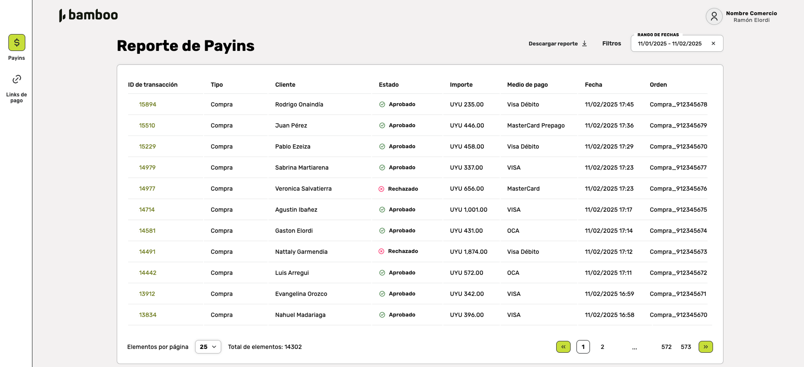

Reporte de Payins
La sección Reporte de Payins permite al usuario visualizar un listado detallado de todas las transacciones realizadas a través de Bamboo Payments. Esta vista proporciona información relevante sobre cada transacción, como el cliente, el estado, el importe, el medio de pago y otros detalles útiles para la gestión y análisis.
Funcionalidades Principales
1. Listado de Transacciones
Cada fila en la tabla representa una transacción individual y muestra:
| Dato | Descripción | Observaciones |
|---|---|---|
| ID de compra | Identificador único de la transacción | Enlace clicable para más detalles |
| Tipo | Tipo de transacción | - |
| Cliente | Nombre del cliente asociado a la transacción | - |
| Estado | Estado actual de la transacción | Aprobado, Rechazado, Cancelado, etc. |
| Importe | Monto de la transacción | Incluye moneda utilizada |
| Medio de pago | Método utilizado para realizar el pago | Mastercard, VISA, OCA, etc. |
| Fecha | Fecha y hora en que se registró la transacción | - |
| Orden | Número o referencia asociada a la orden | - |
2. Descargar Reporte
Opción para descargar un archivo con el reporte completo de las transacciones mostradas, adaptado al rango de fechas y filtros aplicados.
3. Filtrado Avanzado
El usuario puede personalizar los resultados mostrados utilizando el módulo de filtros, accesible mediante el botón Filtros.
| Tipo de dato | Filtro | Descripción |
|---|---|---|
| General | Cuenta | Selección de cuentas del comercio |
| General | Estado | Filtrar por estados de las transacciones |
| General | Orden | Filtrar por tipo de orden |
| General | ID de Transacción | Buscar por identificadores específicos |
| General | Tipo | Filtrar por tipo de transacción |
| Detalle de compra | Medio de pago | Seleccionar métodos específicos |
| Detalle de compra | Moneda | Seleccionar tipos de moneda |
| Detalle de compra | Importe | Filtrar por valor monetario |
| Cliente | Cliente | Buscar por nombre del cliente |
| Cliente | Buscar por correo electrónico | |
| Cliente | Documento | Buscar por documento de identidad |
Navegación
Desde esta vista, el usuario puede hacer clic en el ID de Transacción para acceder a los detalles específicos de cada transacción.